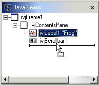
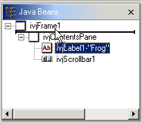

The Java Beans view shows children in the order in which they are added to their parent. This is determined when the source is parsed by the order of the methods that create the relationship, such as add(Component,Object).
The Java Beans view can be used to reorder children by selecting and dragging them. As you drag the Java bean, feedback is drawn as a line that shows the position of where the bean will be moved The following figure shows a label that has been selected and dragged below the scrollbar. The left edge of the feedback shows that the label is added at the same depth as the scrollbar and the label. So, it will remain a child component of the contents pane.

As the mouse is moved around, the left edge of the feedback line will always be drawn at the depth level in the tree where the item will be inserted. The figure below shows that the left edge of the feedback line is level with the frame itself, and if the drag operation is completed the label will become a top level Java bean similar to the frame itself.

Related concepts
Visual Editor for Java
Related tasks
Composing classes visually
Editing a visual bean